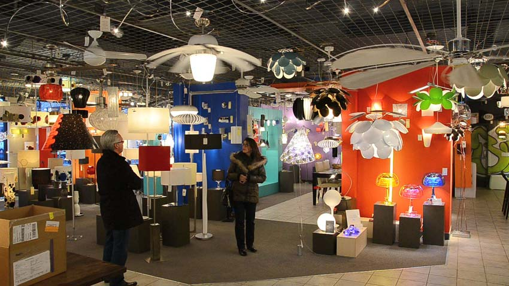
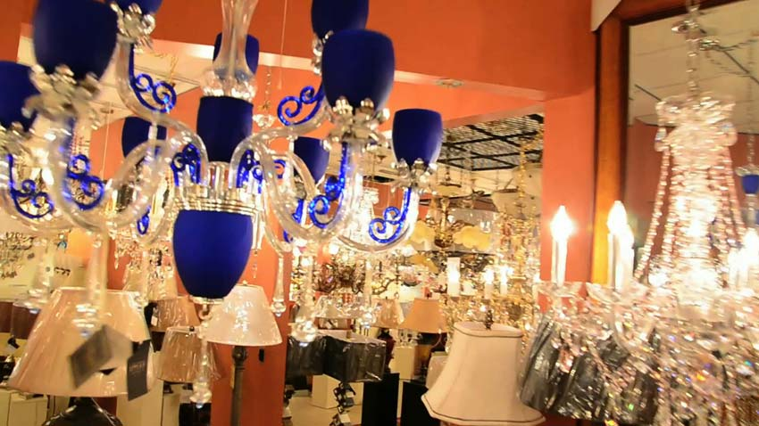

At Séances éphémères, FICFA (Festival International du Cinéma Francophone en Acadie), Moncton NB


Moons Field is an audiovisual performance that explores the phototaxis phenomenon which insects direct their movements according to the light, as a metaphor of similar behaviour in the individual in relation to his sources of attractions, commonly called deflection. What deviated our paths distracts us and takes us elsewhere? Using vjing tools, I orchestrate videos of insects swirling around neon, videos recorded during my visits to the entomologist Charles Béland with videos taken inside lighting stores. I accompany them with processed sounds of chandeliers and recordings taken during my visit to Bill Oehlke entomologist.